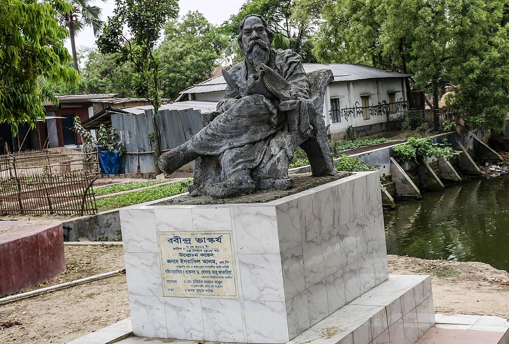
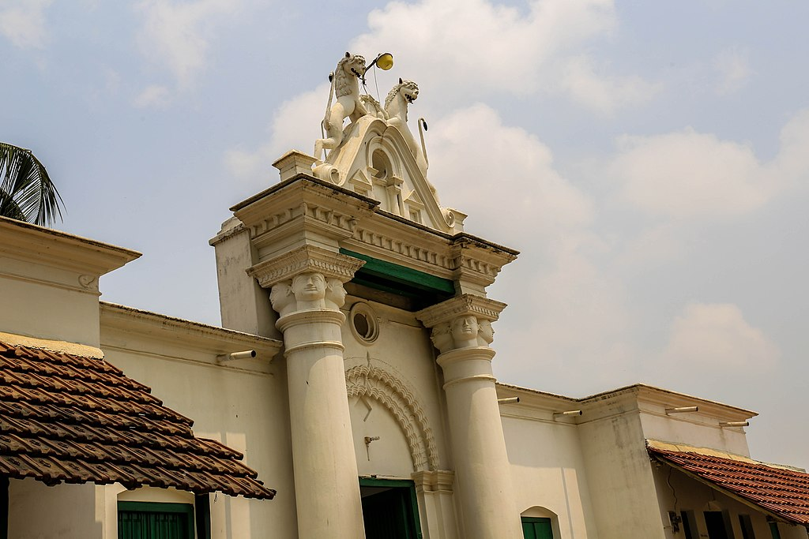
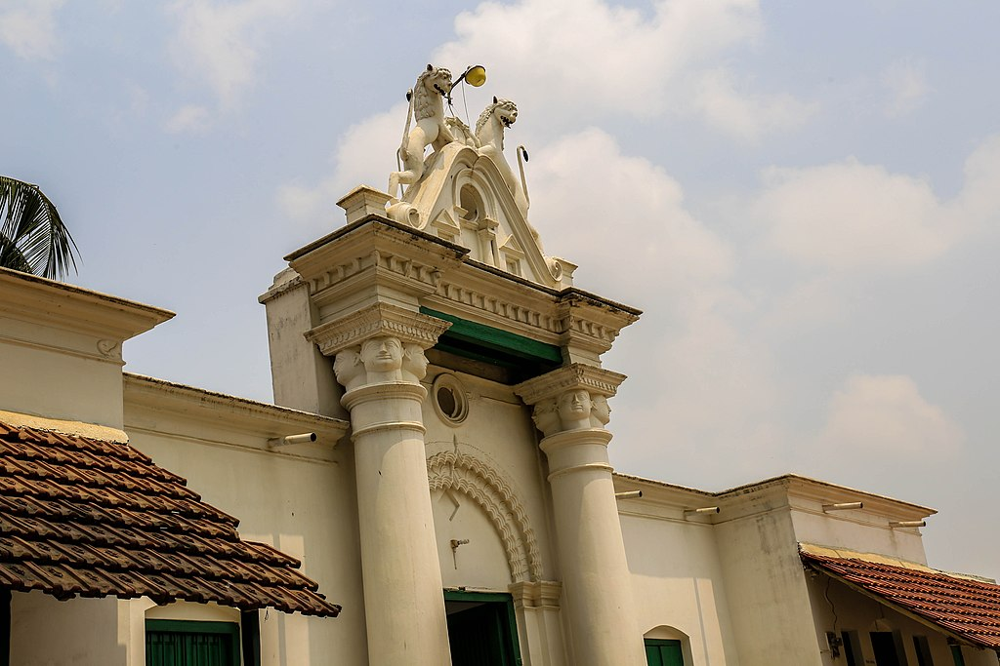
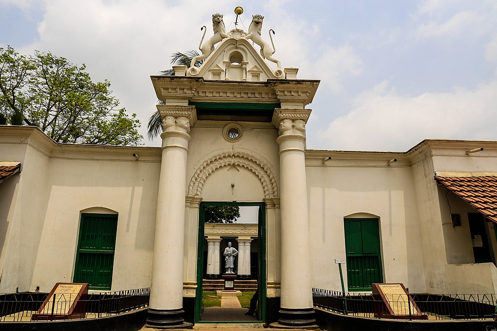
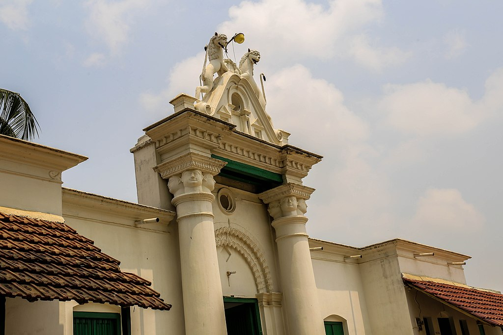

Photos
 

Patishor kuthibari পতিসর রবীন্দ্র কাচারী বাড়িটি নওগাঁ জেলার আত্রাই উপজেলায় অবস্থিত বাংলাদেশের অন্যতম একটি সংরক্ষিত পুরাকীর্তি ও বিশ্বকবি রবীন্দ্রনাথ ঠাকুরের স্মৃতি বিজড়িত স্থান।এটি উপজেলার পতিসর নামক গ্রামে নাগর নদীর তীরে অবস্থিত।
ইতিহাস

পতিসরের স্থাপনাগুলো দেখতে অনেকটাই শিলাইদহ ও শাহজাদপুরের একই পরিবার কর্তৃক স্থাপিত স্থাপনাসমূহের মতোই। এখানে একটি দো-তলা কুঠিবাড়ি রয়েছে। এছাড়াও কুঠিবাড়ি ঘিরে বেশ কিছু ভবন রয়েছে যেগুলোর ধ্বংসাবশেষ দেখতে পাওয়া যায়। কাচারী বাড়ির পাশেই রয়েছে একটি পুকুর। পূর্বে পুকুরটি বেশ বড় থাকলেও কালক্রমে এটির মাটি ভরাট হয়ে গিয়েছে। মূল ভবনের সামনেই রয়েছে রবীন্দ্রনাথ ঠাকুরের একটি আবক্ষ মূর্তি। এছাড়াও ভবনে প্রবেশের জন্য রয়েছে নান্দনিক একটি প্রবেশপথ।

রবীন্দ্রনাথ ঠাকুরের পিতামহ ও জোড়াসাঁকোর ঠাকুর পরিবারের অন্যতম সদস্য দ্বারকানাথ ঠাকুর এ অঞ্চলের জমিদারি ১৮৩০ সালে কেনার পর ১৮৯০ সালে রবীন্দ্রনাথ জমিদারি দেখাশোনার জন্য এ অঞ্চলে আসেন। এই কাচারীতে অবস্থানকালে রবীন্দ্রনাথ ঠাকুর বেশ কিছু কাব্য, গল্প ও প্রবন্ধ রচনা করেন। এই স্থানটির চারপাশেই রবি ঠাকুরের পরিবার কর্তৃক স্থাপিত বেশ কিছু স্থাপনা রয়েছে। এর মধ্যে উল্লেখযোগ্য হল, একটি বিদ্যালয়(কালীগ্রাম রথীন্দ্রনাথ ইন্সটিটিউশন), দাতব্য হাসপাতাল ও পুরাতন একটি কৃষি ব্যাংক যা ১৯০৫ সালে স্থাপিত হয়েছিল। এছাড়াও গড়ে তুলেছিলেন মৃৎশিল্প। রবীন্দ্রনাথ ঠাকুর নোবেল প্রাপ্তির পর সর্বশেষ ১৯৩৭ সালে পতিসরে আসেন। বর্তমানে এখানে, রবীন্দ্রনাথের জন্মদিন ও মৃত্যুবার্ষিকীতে বিভিন্ন অনুষ্ঠানের আয়োজন করা হয়। পতিসর কাছারি বাড়িতে থাকাকালীন সময়ে রবীন্দ্রনাথ ঠাকুর গোরা ও ঘরে বাহিরে উপন্যাস এবং বিদায় অভিশাপ কাব্য রচনা করেন। তিনি প্রতিহিংসা, ঠাকুরদা এবং ভারতবাসী প্রবন্ধও এই সময়েই রচনা করেন।